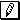

Oni kutimas bildigi Petri-reton per direktaj grafeoj similaj al ĉi tiuj . La verticoj de tiu dukolora grafeo estas P+T; la pozicioj (aŭ «lokoj») estas bildigataj per cirkloj, la transirejon (aŭ «hurdojn») prezentas dikaj strekoj aŭ ortogramoj. Direkta eĝo iras el pozicia vertico p al transirejo t SSE F(p,t)=1; el transirejo t al pozicio p, SSE H(t,p)=1.
Pozicia vertico estas markata per nenegativa entjero (lokmarkaĵo), kiu en la grafika prezento estas bildigata per koncerna nombro da nigraj ĵetonoj («diskoj», «markoj») en la responda cirklo.
Petri-reto funkcias paŝante de markaĵo al markaĵo. Ĉiu markaĵo estas ĵeto M:P→ℕ; la reto komencas sian funkciadon ĉe la komenca markaĵo M₀. La markaĵoŝanĝoj okazas rezulte de ŝalto fare de iu el la transirejoj.
Transirejo t povas ŝaltiĝi («malfermiĝi», «eki», «pafi») ĉe markaĵo M, se
(∀p∈P)[M(p)−F(t,p)≥0]
Tiu kondiĉo signifas, ke ĉiuj enirejoj de t, t.e. ĉiuj pozicioj p por kiuj F(p,t)=1, havas po almenaŭ unu ĵetonon.
Post ŝalto de transirejo t ĉe markaĵo M ĉi-lastan anstataŭas la markaĵo M′ laŭ la sekva regulo:
(∀p∈P)[M′(p)=M(p)−F(t,p)+H(t,p)];
alivorte, la transirejo t deprenas po unu ĵetonon el ĉiu sia enirejo, kaj aldonas po unu ĵetonon en ĉiun sian elirejon, t.e. en ĉiun pozicion p por kiu H(t,p)=1. Ke M′ tuj sekvas el M per t simbolas M ⊢t M′.
La transirejoj ŝaltiĝas sinsekve sed nedeterminisme: se pluraj transirejoj povas ŝaltiĝi, ekas nur unu, ajna el ili (ekz-e ). La reto haltas, se ĉe la kuranta markaĵo neniu transirejo povas ŝaltiĝi.
Tiel Petri-reto modelas dinamikan strukturon kaj ties funkciadon. La supra difino priskribas «simplan» Petri-reton; en la ĝenerala okazo la reto estas plurgrafeo, kaj la ŝaltokondiĉo postulas, ke la nombro de la ĵetonoj en ĉiu enirejo p de transirejo t estu ne malplia ol la nombro de la eĝoj, irantaj el p al t, kaj la transirejo t post la ŝalto aldonas en ĉiun sian elirejon q tiom da ĵetonoj, kiom da eĝoj iras el t al q. Tamen tiu ĝeneraligo ne estas esenca, ĉar ĉiun tian reton oni povas transformi en iun simplan, retenante la interesajn ecojn de la ĝenerala.
Se la pozicioj formas ordan aron P=(p₁,… pn), tiam markaĵo M oportune prezenteblas per n-opo M=(M(p₁),… M(pn)). Facile difineblas rilatoj inter markaĵoj: la egalo M=M′, la rigora plio M>M′ ktp. Ekz-e M≤M′ SSE (∀p∈P)[M(p)≤M′(p)].
Markaĵo M′ estas atingebla en la reto R el markaĵo M per ŝaltosekvenco s=t₁ … tk, se ekzistas sekvenco da tujsekvaj markaĵoj M ⊢t₁ M₁ …⊢tk M′ (simbole, M ⊢s M′, aŭ M ⊢ M′ — se la ŝaltosekvenco ne gravas).
Markaĵo M estas atingebla en la reto R, se M₀ ⊢ M. Estu A(R) la aro de ĉiuj markaĵoj, atingeblaj en R. La vortoaro
L(R) = { s∈T* | (∃M)[M₀ ⊢s M] }
estas la libera lingvo de la reto R.
Transirejo t atingeblas el markaĵo M en reto R, se ekzistas tia M′∈A(R), ke M⊢M′ kaj t ŝalteblas ĉe M′. Transirejo atingeblas en reto, se ĝi atingeblas el ties komenca markaĵo.
Transirejo estas viva, se ĝi atingeblas el ajna markaĵo el A(R). Reto R estas viva, se ĉiuj ĝiaj transirejoj estas vivaj.
Pozicio p estas barita, se ekzistas entjero k tia, ke M(p)≤k por ĉiuj M∈A(R). Reto estas barita, se ĉiuj ĝiaj pozicioj estas baritaj.
Petri-retoj R₁ kaj R₂ estas ekvivalentaj, se L(R₁)=L(R₂).
{kind=link}